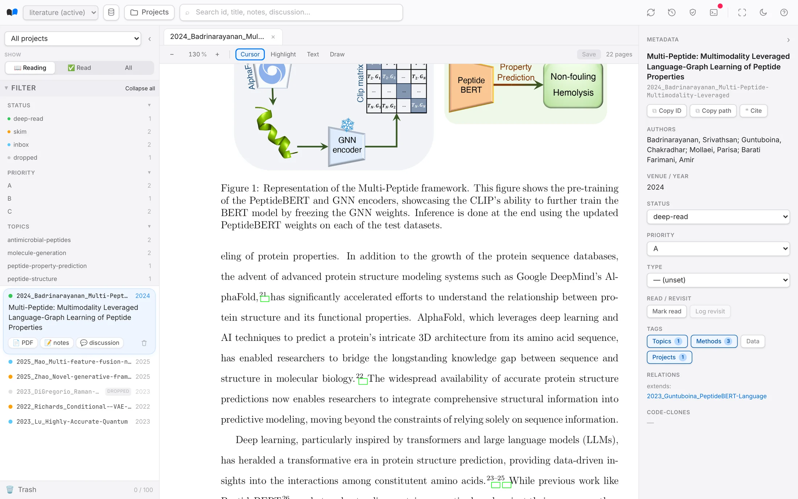
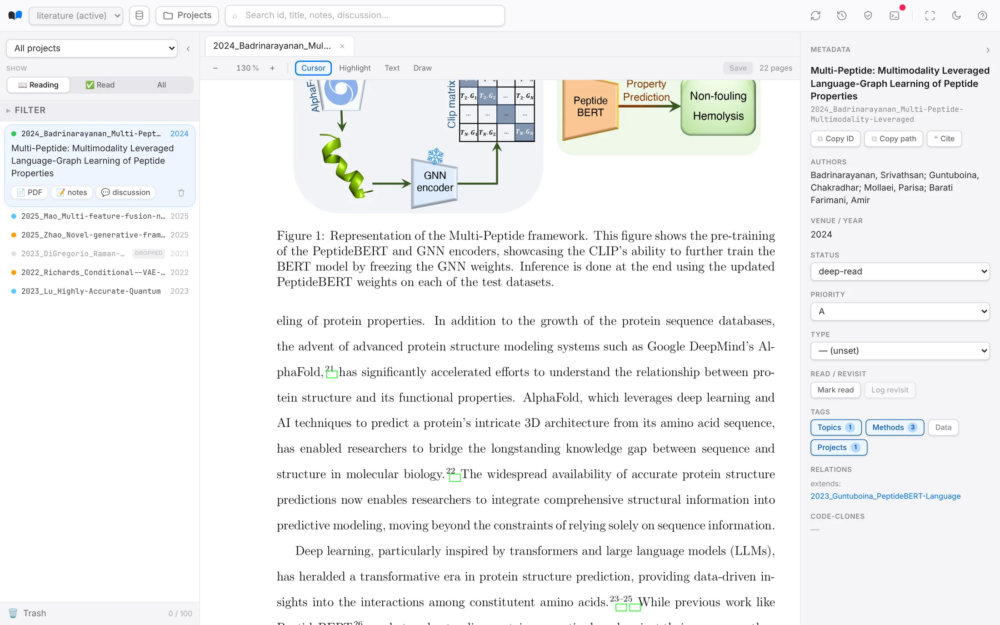
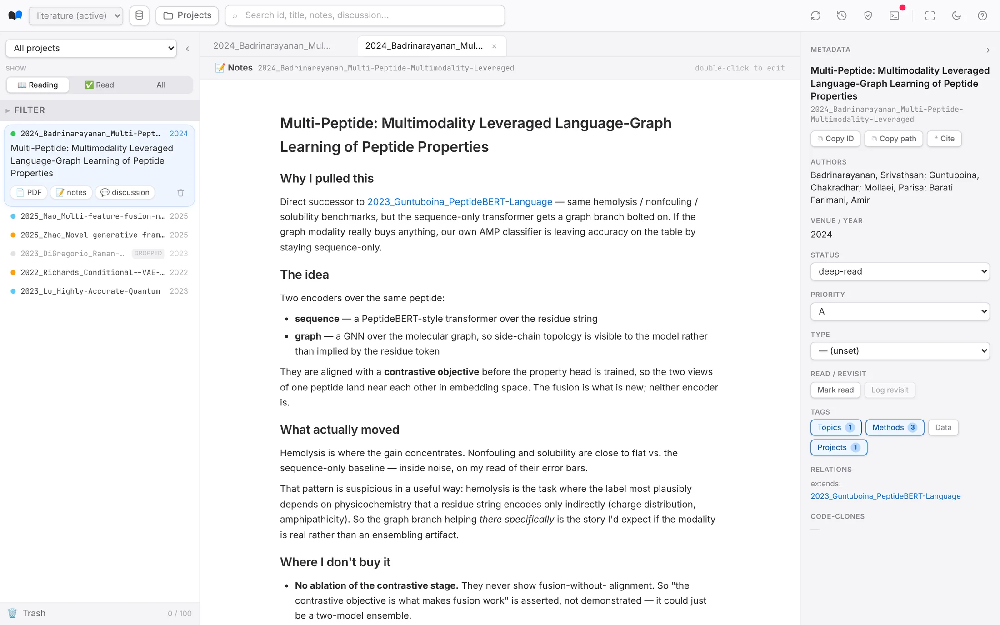

Every paper stays as a plain file on your own disk — and the AI agent you already use files, finds and links them for you.
curl -LsSf https://raw.githubusercontent.com/wqx1999/litman/main/install.sh | sh
irm https://raw.githubusercontent.com/wqx1999/litman/main/install.ps1 | iex
The problem
Every paper you meant to understand ends up as one more cryptic PDF in a pile.
The engine · your agent
Ask the AI agent you already use, in plain words. It runs the commands — filing, finding and linking papers for you.
lit add ~/Downloads/2310.19325v2.pdf
lit modify 2024_Chen --add-tag topics=peptide-design --set priority=A
papers/2024_Chen_Diffusion-Peptide-Binders/. It cites two papers already in your vault — link them?lit list --topic peptide-design --status read --sort recent
notes.md flags the sampler as the weak point. Open it?lit code add 2024_Chen --repo github.com/chen-lab/diff-peptide
cd codes/2024_Chen && python train.py --dry-run
codes/2024_Chen/. train.py needs torch 2.1 and a config they didn't ship — I drafted one and noted it in discussion.md.lit list --method diffusion --topic peptide-design
lit relations 2024_Chen --add related=Watson2023,Ingraham2023
The window · for you
The agent keeps everything filed and linked. The app is that same library, made for reading — where you highlight, annotate and note.
Filter by status, priority, topic — the same library the agent files into. Read it in place. Highlight and annotate; the marks stay with the paper. Notes are Markdown on disk. The agent reads them; so does any editor you like.



curl -LsSf https://raw.githubusercontent.com/wqx1999/litman/main/install.sh | sh
irm https://raw.githubusercontent.com/wqx1999/litman/main/install.ps1 | iex